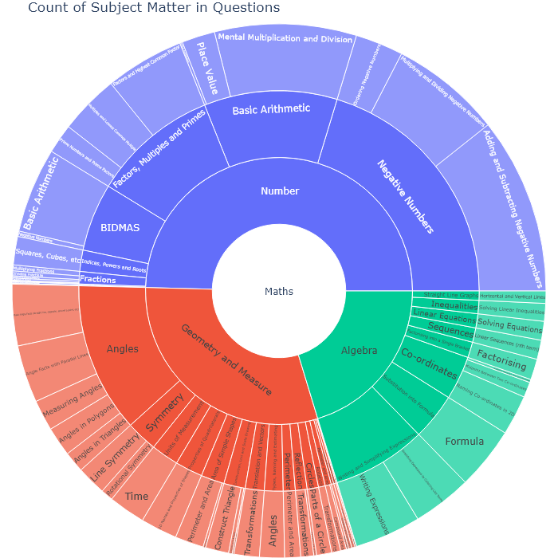
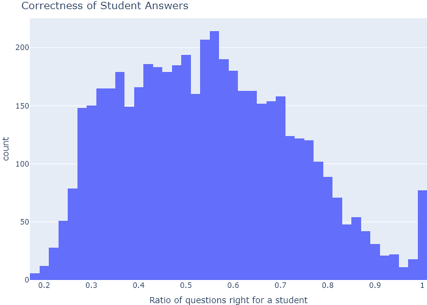
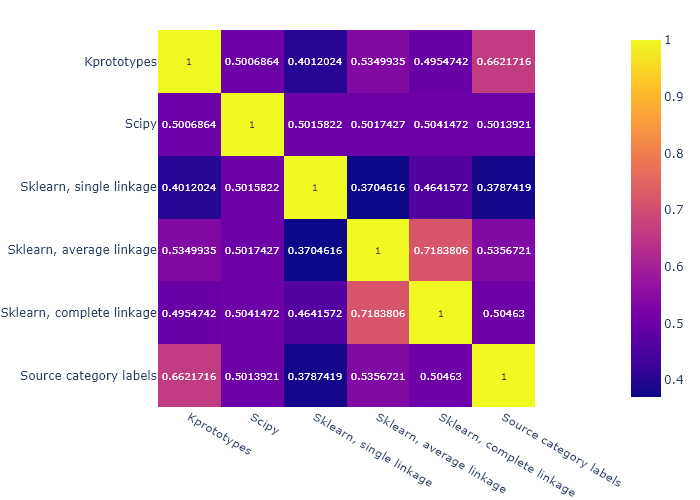
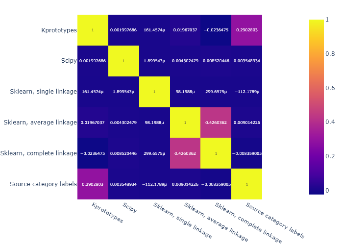

For all used columns in the dataset, we show their statistical summaries in Table 3.1.
Table 3.1: Summary values of all the used columns in the dataset.
QuestionId
UserId
AnswerId
IsCorrect
DateAnswered
Confidence
GroupId
count
1382727.0
1382727.0
1382727.0
1382727.0
1382727
346428.0
1382727.0
unique
177615
top
2020-03-03 11:12:00
freq
165
mean
468.2
3036.3
754427.9
0.5
73.9
196.2
std
273.6
1770.6
435619.0
0.5
31.2
114.6
min
0.0
1.0
0.0
0.0
0.0
0.0
25%
233.0
1515.0
377293.5
0.0
50.0
95.0
50%
468.0
3009.0
754453.0
1.0
75.0
198.0
75%
703.0
4565.0
1131772.5
1.0
100.0
300.0
max
947.0
6147.0
1508916.0
1.0
100.0
389.0
QuizId
Gender
PremiumPupil
SubjectId
Age
Category1
count
1382727.0
1382727.0
1382727
1382727
727345.0
1382727
unique
2
62
3
top
False
[3, 32, 42, 211]
Number
freq
1185347
147497
685691
mean
61.4
1.0
11.4
std
31.3
0.8
0.6
min
0.0
0.0
0.0
25%
37.0
0.0
11.0
50%
63.0
1.0
11.0
75%
86.0
2.0
12.0
max
119.0
3.0
38.0
We show a plot of all the subject categories found in the question dataset Figure 3.1, proportioned by their count appearance in the dataset. Note that for the later clustering/analysis, we only use the 1st level hierarcical categories, aka Algebra, Geometry and Measure, Number.

Figure 3.1: A sunburst plot of all the hierarchical subject categories found in the question dataset, with ratios correct to their count/appearance.
In Figure 3.2, we show the proportion of questions answered correctly by each student as a histogram.

Figure 3.2: A histogram of the proportion of questions answered correctly by a student.
3.1 Clustering
Clustering was performed as described in Section 2 (Methods); the kmodes library was used on teh base dataset, the Gower distances matrix was computed in order to handle categorical variables, and the distance matrix was used with scikit-learn library for Agglomerative clustering. In addition, for the Agglomerative clustering, 3 different linkages between ditances were used: single, average, and complete.
3.1.1 Perfomance
In order to judge the clustering output, the Rand index was calculated as described in the previous section. We compute the Rand index, and the adjusted Rand index, not only between the source labels and the computed clusters but also between each clustering method. The rand index results are displayed in Figure 3.3, as a heat map matrix between all clustering types and the source labels.

(a) Rand Index Matrix

(b) Adjusted Rand Index
Figure 3.3: Matrices of the rand index as compared across all clustering methods, and compared to the original source category labels. The scipy and sklearn clustering methods were done using a precomputed Gower matrix.
3.2 Supervised Learning Models Performance
The supervised learning models were run as described in the previous section, with their default values used for most parameters (such as loss function). For most models, the one modified parameter was the number of iterations run in order to train the model, by increasing it to 1000.
For the best performing model (HistGradientBoostingClassifier), we made the following modifications in an attempt to improve its performance even further:
Figure 3.4: The ROC, confusion matrix, and precision-recall curves for the best and worst performing model.
Baek, Youngmin, Bado Lee, Dongyoon Han, Sangdoo Yun, and Hwalsuk Lee. 2019. “Character Region Awareness for Text Detection.” In Proceedings of the IEEE Conference on Computer Vision and Pattern Recognition, 9365–74.
Ghosh, Aritra, and Andrew Lan. 2021. “BOBCAT: Bilevel Optimization-Based Computerized Adaptive Testing.” In Proceedings of the Thirtieth International Joint Conference on Artificial Intelligence, IJCAI-21, edited by Zhi-Hua Zhou, 2410–17. International Joint Conferences on Artificial Intelligence Organization. https://doi.org/10.24963/ijcai.2021/332.
Gower, J. C. 1971. “A General Coefficient of Similarity and Some of Its Properties.”Biometrics 27 (4): 857–71. http://www.jstor.org/stable/2528823.
Pedregosa, F., G. Varoquaux, A. Gramfort, V. Michel, B. Thirion, O. Grisel, M. Blondel, et al. 2011. “Scikit-Learn: Machine Learning in Python.”Journal of Machine Learning Research 12: 2825–30.
Rand, William M. 1971. “Objective Criteria for the Evaluation of Clustering Methods.”Journal of the American Statistical Association 66 (336): 846–50. https://doi.org/10.1080/01621459.1971.10482356.
Wang, Zichao, Angus Lamb, Evgeny Saveliev, Pashmina Cameron, Yordan Zaykov, Jose Miguel Hernandez-Lobato, Richard E. Turner, et al. 2021. “Results and Insights from Diagnostic Questions: The NeurIPS 2020 Education Challenge.”https://arxiv.org/abs/2104.04034.
Wang, Zichao, Angus Lamb, Evgeny Saveliev, Pashmina Cameron, Yordan Zaykov, José Miguel Hernández-Lobato, Richard E Turner, et al. 2020. “Instructions and Guide for Diagnostic Questions: The Neurips 2020 Education Challenge.”arXiv Preprint arXiv:2007.12061.